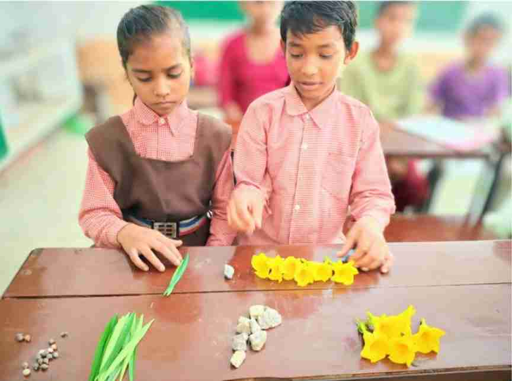
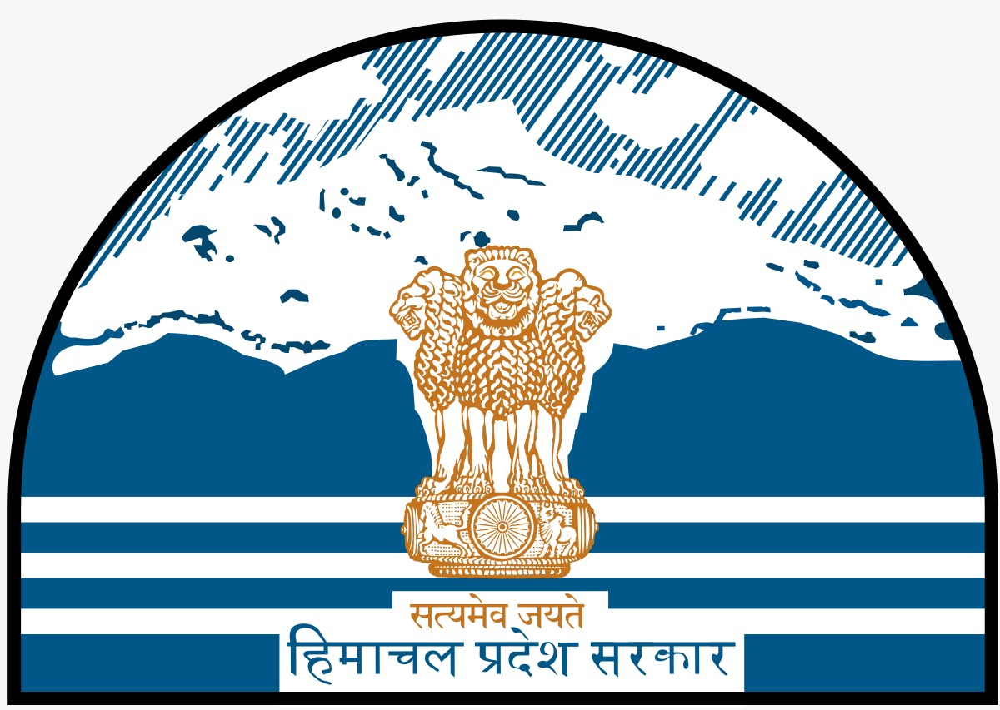
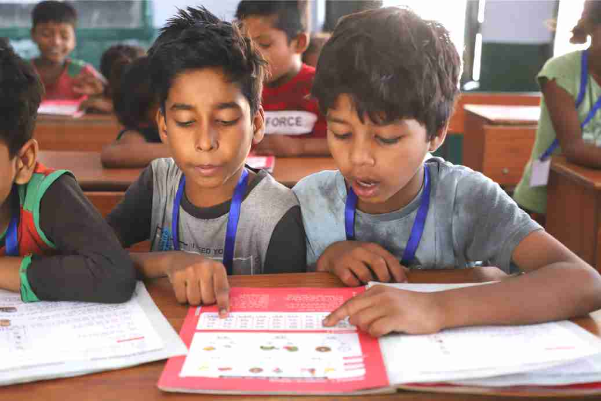
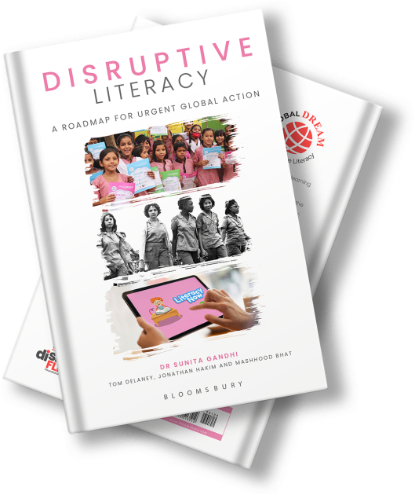

Explore: Rigorous, small-scale research (RCT design) with a few schools implementing ALfA and others in the control group


rapid results initiative
Explore. Expand. Embed.


Boost FLN in 45 Days
FAST
HOLISTIC
TRANSFORMATIVE
Rapid Results Initiative : What & Why?

Insanity is doing the same thing over and over and expecting a different outcome.
- Albert Einstein
7 out of 10
10-year olds cannot read in Low-and- Middle-Income Countries around the world
Imagine: New Process | New Structure | New Outcome
Relying on current practices will merely replicate existing outcomes. We need to embrace research-driven innovations that challenge established methods and pave the way for transformational progress.
Accelerating Learning for All (ALfA) addresses delays in mastering foundational skills that hinder the academic progress of many children. Its innovative peer-to-peer learning processes enable children to achieve literacy and numeracy goals in just 45 working days. This results in greater fluency, an expanded vocabulary, and a better understanding of language and math concepts, setting them on a new trajectory for success.
The Rapid Results Initiative (RRI) combines this new pedagogy, learning materials, and teacher empowerment to address the global education crisis effectively and efficiently.
The RRI involves three stages:

Expand: Scaling the program to hundreds of schools across a local geography.
Embed: Integrating the ALfA materials, pedagogy and teacher training within the education system.
Through rigorous research and swift results, the RRI empowers policymakers to integrate these methods into existing curricula and teacher training systems.


Why ALfA?
- Rapid Results: ALfA enables children to attain foundational literacy and numeracy skills within just 3 months, contrasting with traditional methods that often take 3 years. This rapid progress allows policymakers to swiftly scale new pedagogical approaches.
- Teacher-Friendly Implementation: ALfA simplifies teaching with pre-structured lesson triggers and minimal planning requirements. The RRI process offers robust support through training, WhatsApp groups, and certificates, which motivates educators.
- Cost-Efficiency: Thin booklets, short training sessions, and locally available resources, making it highly adaptable and affordable for diverse contexts.
- Scalability and Adaptability: Its low-cost, high-impact approach makes ALfA accessible for under-resourced settings, enabling equitable implementation at scale.
- Holistic Development: Beyond literacy and numeracy, ALfA builds socio-emotional and cognitive skills crucial for lifelong learning, including Collaboration, Communication & Critical Thinking.
The ALfA process is similar to teaching children to ride a bicycle; once they learn the basics, they build speed, understanding, and confidence through practice.
How is ALfA Different from Other Great Buys?
ALfA was launched in 2022 after 22 years of broader educational research in Iceland, the UK, and India. Since 2022, it has grown from 20 schools to rolling out in stages across 17,000 schools. ALfA program's impressive growth has been driven by its consistent ability achieve significant FLN gains in a short, across diverse contexts.
While ALfA is still emerging compared to established programs such as TaRL (Teaching at the Right Level) and Structured Pedagogy, its ability to deliver swift learning gains positions it as a promising strategy for achieving universal literacy and numeracy.
For a more detailed analysis of the differences between ALfA, TaRL and Structured Pedagogy.

- Source: Copenhagen Consensus, 2023. Halftime to SDGs Best Investment Paper: Education
- Source: Weighted average from implementations. $4 per child, effect size of 0.48 (see HGSE for more details).


Explore. Expand. Embed
Rapid Results Initiative (RRI) progresses through three stages—Explore, Expand, Embed—to ensure rigorous research, scalability and system-wide adoption. Progression is flexible; one can advance to Expand or directly to Embed.
-
stage 1

Explore
-
stage 2

Expand
-
stage 3

Embed
Research implementation in a few schools, randomly allocated to treatment and control.
- Objective & scope : Conduct pilots in a few schools to establish proof of concept that FLN goals can be achieved quickly using ALfA pedagogy. We suggest 4 treatment schools + 4 control schools.
- Roles & Cost-sharing: DEVI Sansthan is offering free online training, learning materials, and assessments. The implementation partner should arrange appropriate monitoring and third-party assessments.
- Research Design: Pre-post difference in difference analysis (RCT design).
Implementation Options
- Standard Model: The ALfA program consists of 45 working days, with one hour dedicated to literacy and one hour to numeracy each day.
- Intensive Model: 30 working days with full-day FLN focus using ALfA in a mission mode,without other subjects.
1
School Selection
Random selection and assignment of treatment and control schools. read more

2

Baseline Assessments
Third party tests for a random sample of students, to measure initial levels. read more
3
Teacher Training
Online or in-person, covering ALfA pedagogy and classroom triggers. read more
4

Learning Materials
DEVI provides soft copies & up to 250 hard copies of ALfA toolkits for free. read more
5
Daily ALfA lessons
Structured learning process for foundational literacy and numeracy. read more
6

Diversity in the Classroom
ALfA includes all students in the learning process, regardless of ability level. read more
7
Supportive Supervision
Regular school visits, with teachers meeting each other for peer encouragement. read more
8
Role of Technology
Teachers connect with each other on WhatsApp groups for encouragement & support. read more
9
Refresher trainings
A midline training helps teachers adapt to challenges and learn from each other. read more
10
Parent Engagement
Town halls or open days help introduce parents to ALfA methods. read more
11
Endline Assessments
Measure progress with a paper that is equivalent but not identical to the baseline. read more
12
Analysis & Reporting
Measuring students' progress from baseline to endline and sharing with stakeholders. read more
Scale the implementation to more schools covering one or more low-performing districts.
- Objective & Scope: Broaden the initiative to multiple clusters or districts (hundreds of schools).
- Cost-sharing: DEVI Sansthan is offering free online training and soft copies of learning materials and assessments. The implementation partner should arrange bulk printing, and if venue/travel if physical training is required.
- Research Design: Comparison of block- or district- level data with another geography not implementing ALfA.
Activities
- Cluster Expansion: Scale pilots to include underperforming regions.
- Monitoring and Feedback: Use midline and endline assessments to collect more feedback and 3rd party evidence.
- Capacity Building: Train local educators and supervisors to sustain the program.
- Regional Demonstrations: Showcase model schools to policymakers and other stakeholders
Integrate system-wide as a supplement or in the government textbooks & teacher training systems.
- Objective & Scope: Embed ALfA pedagogy for systemic integration and long-term transformation across a whole region or state (thousands of schools).
- Cost-sharing: DEVI Sansthan will continue offering free knowledge partnership, with the implementation partner arranging bulk printing. The program can be roughly cost-neutral if
- Type of Data: State- or national- level test results.
Activities
- Curriculum Integration: Embed ALfA into national textbooks and teacher guides.
- Teacher Development: Develop systemic training programs emphasizing paired learning, critical thinking, and inclusion.
- Sustainability Mechanisms: Build local capacity and monitoring systems to ensure self-reliance.
Global RRIs Case Studies
ALfA FLN toolkits are available in 33 languages, including Arabic, Chishona, Dari, English, French, Mandarin, Portuguese, Spanish, Swahili, Twi, Yoruba, and many Indian languages covering a vast proportion of the world's population. They can be easily replicated. Partnerships with governments, NGOs, and international organizations can drive large-scale adoptions following the RRIs.

GhanaOlinga Foundation / Associates for Change
Implementation in 6 schools with 2 as control. 30 days later, in the midline test, the proportion of Grade 4 & 5 students reading at the highest level almost doubled from 22% to 41%.

Uttar PradeshState & District Governments
In Uttar Pradesh, India's most populous state, schools and districts implementing ALfA performed 2-3x better on the government's NIPUN Assessment Test, which measures FLN competencies.

MaldivesMinistry of Education, UNICEF
Test scores in ALfA schools improved 7 percentage points in English and 11 percentage points in Maths – nearly double the rate of improvement compared to reference group schools.
PeruArca Beta NGO
ALfA is being piloted in several schools in the remote Amazon, with impressive results. Discussions are now underway with government for scaling up.
USALiteracy Chicago
ALfA is helping disadvantaged adults learn to read in a swift and joyful process. Volunteers and learners alike are loving the new approach to literacy.

KenyaPath Youth NGO
Our partners used the ALfA materials to run a literacy & numeracy bootcamp for children from the slums of Mombassa.


Himachal PradeshState Government
Himachal Pradesh has signed an agreement for state-wide ALfA implementation. We began in two districts, Solan and Shimla, with impressive results.

RajasthanIIMPACT Foundation
The ALfA materials are being used in a mother literacy program Rajasthan, as well as West Bengal, UP, Uttarkhand and Haryana. Learners test scores more than tripled from baseline to endline.


Connection to Global Learning Lab (GLL) 2026
RRI serves as a precursor to the Global Learning Lab (GLL) 2025, focused on "Fast-Forward FLN: From Global Research to Systemic Transformation," scheduled for October 23-25, 2025, in Lucknow, India. The GLL will convene global stakeholders (policymakers, researchers, international organizations, funding agencies, practitioners, and NGOs) to address foundational learning gaps.
As part of this initiative, countries and regions are invited to implement the 45-day Research Implementations in advance of the GLL, and come prepared to share their findings on the efficacy, scalability, and adaptability of the ALfA pedagogy, and pathways for its integration in national frameworks at the GLL.
Learn More

Read Dr Gandhi's latest book, Accelerating Learning for All. (Bloomsbury, 2024)
Read Extract Visit PublisherHear endorsements by high-level Indian policymakers.
Watch Now
Check out the ALfA materials, available in 30+ Indian and International languages.
Explore ToolkitsFrequently Asked Questions
While ALfA is a new program, having been launched in government school contexts in 2022, it is based on over a decade of active educational research in Lucknow’s slums and private schools. ALfA is now well established, having been implemented in thousands of schools in India, and with pilots across 12 countries. ALfA is discussed at length in two books published by Bloomsbury and two chapters of a book edited by Harvard Graduate School of Education Professor Fernando Reimers.
But perhaps the most important reason to try something new is this: the old systems are not working. 70% of 10-year-olds in low-and-middle-income countries around the world cannot read a simple text with understanding. Something must change!
We understand that many teachers are already overburdened, and have a big workload. However, we firmly believe that ‘completing the curriculum’ is a secondary goal, the primary focus should be on students’ learning outcomes. Experiences in Uttar Pradesh, India’s most populous state, indicate that when students complete the 45-day ALfA program their improved reading skills enable them to work through their textbooks much more swiftly and effectively.
Though ALfA is a new pedagogy, it contains many elements which are well established – from peer learning to hands-on activities. ALfA is like a recipe that brings together these ingredients in a new and unique way, to make a flavourful dish:
- Paired learning throughout the day, rather than occasionally
- Pairs are made randomly, rather than based on ability level
- Modules are simple and visual, enabling children to learn themselves, rather than relying on a teacher to interpret
- Children make new questions for each other, rather than simply solving from worksheets
None of these aspects is not unique, but they are combined in a unique way in ALfA.
Structured pedagogy is defined as a ‘coherent package of textbooks, lesson plans, and teacher training and coaching that work together to improve in-class teaching’ (Copenhagen Consensus, 2023). Structured pedagogy is an increasingly popular approach, recognized by the World Bank Global Education Evidence Advisory Panel as a ‘Smart Buy’.
ALfA is a coherent package of learning materials, assessments, apps, teacher training & guides – making it, in some regards, a form of structured pedagogy. However, it is different from some structured pedagogies which provide a highly detailed and rigid mapping of what teachers need to do every period of every week of every year. Instead, ALfA’s process-led structure gives significant flexibility and freedom to both teachers and students to work at their own pace and style.
Many classrooms have huge diversity of learning levels: some children may be at or beyond their age-appropriate level, while others lag far behind. This can be a big challenge for teachers, who struggle to decide whether to teach to the top, middle, or bottom of the class.
Teaching at the Right Level (TaRL) is a well-respected FLN program that tackles this problem of multi-level classes by testing students’ learning levels, grouping them, and targeting instruction accordingly.
ALfA presents a different solution to the same problem: working together in random pairs, children help each other learn. This not only proves effective academically, it also helps develop social skills, as children learn to work with a diversity of classmates. Avoiding labels of ‘strong’ or ‘weak’ helps all children develop a growth mindset, striving to excel regardless of their current learning level.
The Annual Status of Education Report consistently finds high rates (15-30%) of student absenteeism in India, and this is a common problem across many LMICs. However, our experience so far of ALfA in Uttar Pradesh has indicated that, when children are having fun in school and learning is visibly rapid, their attendance typically also increases
ALfA can be particularly helpful in challenging contexts such as multi-level classes or areas with a large student: teacher ratio.
- Peer Learning: Students work together and help each other, such that a diversity of learning levels becomes an opportunity rather than a challenge. Students can even check each other’s work, reducing teacher workload.
- Tiered Activities: ALfA caters to a variety of learning levels within the same module. Students make questions for each other, at the level that is appropriate for them.
ALfA refuses to categorise children as 'weak' or 'strong', but it's true that in any classroom there will be a mix of learning levels. Two students who are struggling with reading will still decipher more together than they would have individually – two heads are better than one. If two children working together both don't understand what they're doing, they can ask another pair for help. With new random pairings every day, children will soon get a chance to work with others. Very soon, though, even the so-called ‘weakest’ students will learn the process and be able to start asking questions. We’ve seen students as young as four-year-olds beautifully ask questions and help each other.
ALfA is currently available in 30 Indian and international languages. We encourage focusing on mother tongue literacy in early years. If ALfA is not available in your local language, we would love to collaborate with you to help develop – reach out to us. When using ALfA in a second language, you may need to help build their vocabulary so they can recognise the pictures, before they are able to learn decoding and blending. For instance, invite the students to make TLMs like picture and letter cards, and play games with them.
Some students already know how to perform various arithmetic operations and get the correct answer. However, they still gain by doing it through hands-on activities, as they gain deeper insight and understanding. Concepts like ‘carrying’ in addition and ‘borrowing’ in subtraction may have earlier been done mechanistically, but now become more meaningful.
Beyond academics, paired learning in ALfA helps students develop their socio-emotional skills, including collaboration, communication, citizenship and character.
Some children have special learning needs (hyper, shy, autistic, dyslexic, etc.) and struggle to focus in a traditional classroom. ALfA helps such children to also become actively involved in the learning process. They are included in the paired learning process, and an active part of the classroom – rather than being segregated into a ‘special’ class. Their presence can help other students develop their collaboration and citizenship skills and attitudes.
ALfA classrooms are often noisy, as children interact with each other in pairs. This clashes with our traditional conception of a 'good class' as one in which students do their individual work silently. As teachers we have to get used to a new normal of accepting 'productive noise'.
Parents, who have themselves been brought up in a traditional education system, will sometimes struggle to understand an ALfA classroom. Common objections include 'there's not enough written work' and 'how will they learn if the teacher doesn't explain'? Initially, you may want to do an ‘open day’ or ‘town hall’ to showcase some ALfA activities and get the teachers more interested. Before long, the learning outcomes of students will speak for themselves.